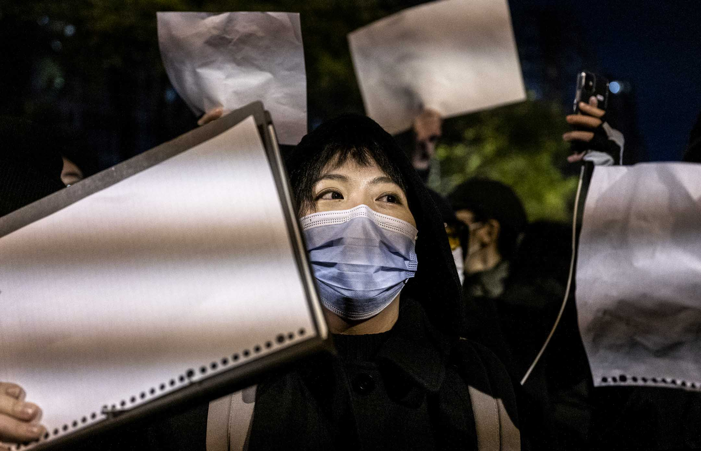
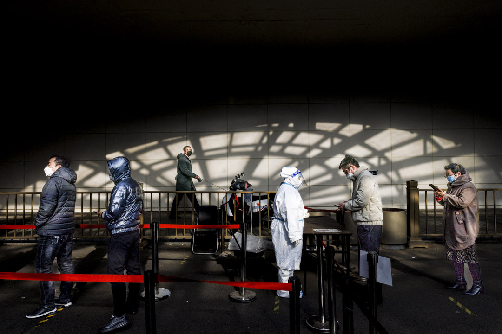
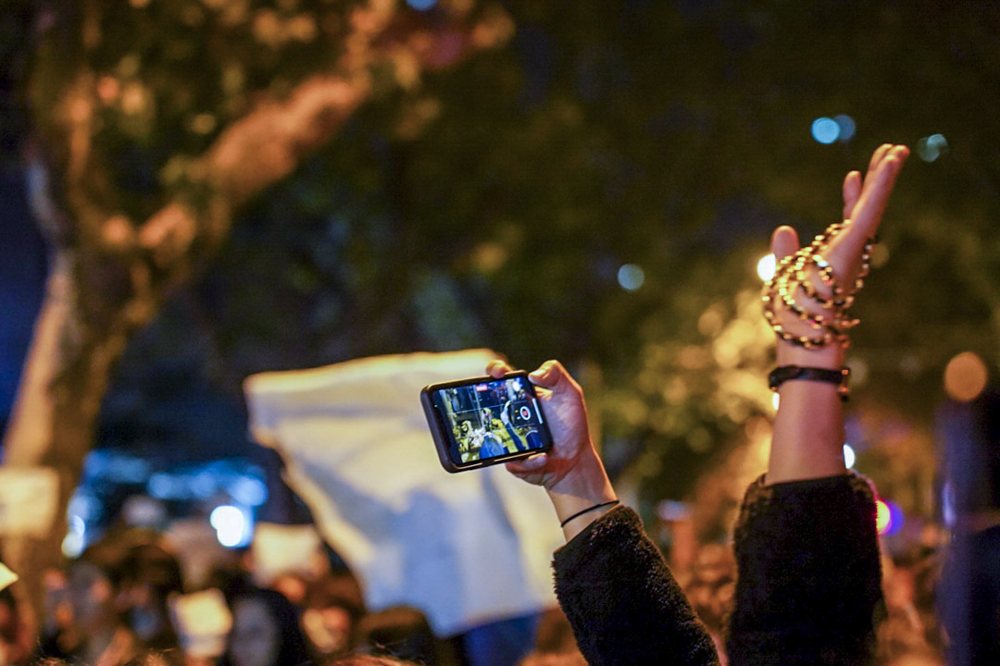
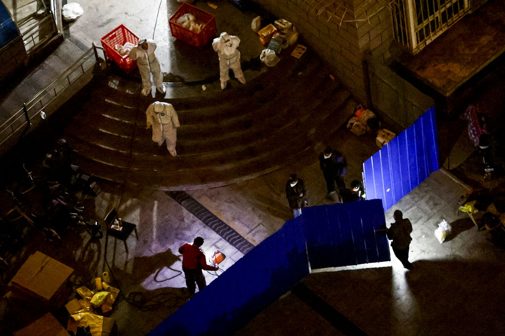
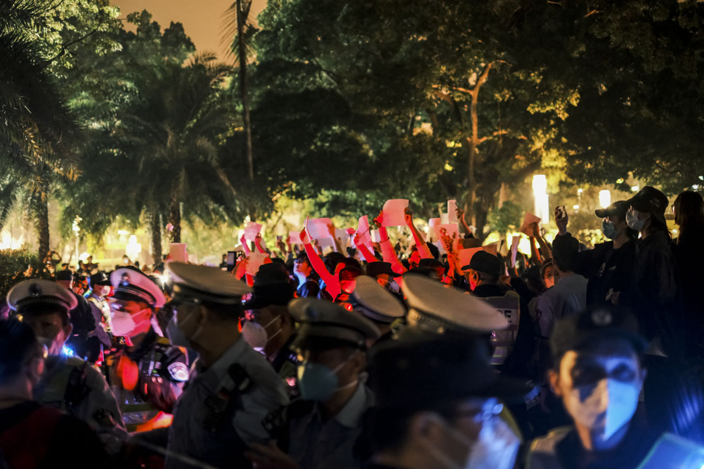

「白紙抗議」的顏色：奪回生活的抗爭者是「境外勢力」嗎？｜端傳媒 Initium Media
Table of Contents
你越是一個完美中國人，你越應該放棄生活，支持自己被封控起來。

Figure 1: 2022年11月27日晚上，北京亮馬河畔，大量市民參與悼念烏魯木齊大火遇難同胞的遊行，部分人手持白紙，高喊口號。攝：Kevin Frayer/Getty Images
特約撰稿人 賈素之 發自新加坡
刊登於 2022-12-09
有一則關於大象的寓言故事。馬戲團養了一頭小象，拴在木樁上，讓它無法掙脫，後來小象長大了，有力量拔起木樁，但它卻從沒想過要逃跑，小小的木栓困住了大象。
2022年中國為執行清零政策進行的大規模封控，像極了這個寓言：只需要幾個社區工作人員和保安，就能把幾萬人封鎖在家裏。直到11月底，抗議封控的聲浪才出現在不同城市，並迅速互相傳染，引發了短暫但洶涌的上街抗議行動，大象終於意識到自己有力量衝破牢籠。
舉白紙之前，拒絕配合和理解的普通人
清零政策三年，中國社會幾乎複製了奧斯維辛的權力結構，被管控的人和管控者（大白）在臉譜上清楚對立，在權力關係上也清楚對立。當封控成為每個人都可能面對的緊急狀態，聲討大白、為難基層也成為普通人反抗的第一步。
在上海的抗議者走上烏魯木齊中路之 前，反對封控的情緒就已經在中國各地涌動了。11月24日，重慶一個被稱為「超人哥」的男人在小區門口抗議封控，他高聲演講：「世界上只有一種病，就是不 自由和窮，我們現在全佔了。我們現在還在為一個小感冒而折騰。市政府錯了，就只能一直錯下去，不然就必須有人負責。」視頻顯示，超人哥被警察拖走，又被現 場的居民救回。這則視頻在微信、微博和短視頻平台廣為流傳，人們支持他的演講，把他看作英雄，也為居民保護他的行為而感動。
值得留意的是，超人哥起的調子很高，他在小區門口喊「不自由，毋寧死」，引用諸葛亮的故事，批評政府不願意承認錯誤，但群衆基礎卻很堅實-–—無論是 舉着手機圍着他的鄰居叔叔阿姨，還是社交媒體上的評論，人們都歡迎這種語言。有網民把重慶人衝破封控的舉動和「川軍」圖騰聯繫起來，說有「川軍」在中國就 不會亡，自由和愛國難得彼此結合。
這讓它區別於11月中旬廣州城中村抗議封控的騷亂。廣州這場衝突引發的輿論，首先是本地人對城中村服裝產業鏈從業者（主要是湖北人社群）的責難。相 關的說法了無新意，無非是指責湖北人不遵守防疫政策到處亂竄，湖北人懶惰、貪婪、撒潑。廣州本地人和政府站在一起，把對封控的反抗看作清零失敗的根源，這 種本土心態在11月17日「反綁維納斯」事件中膨脹到底，兩名外地女性在廣州一個封控區域被一個男人暴力綁住雙手，而主流輿論幾乎都在譴責這兩名「衝卡」 的女性，認為她們「傷害了廣州」，胡錫進甚至評論表示私刑的目的是「扭送派出所」，是合理的手段。
在11月11日放鬆防疫政策的「二十條」出台之後，同時出現了截然相反的兩股潮流。廣州城中村騷亂延續的是動態清零的舊敘事，是2020年初官媒帶 頭指責留學生「千里投毒」，三年間大量網暴、刑拘陽性確診者的回聲，抗爭的人被認為是清零政策要解決的麻煩。重慶超人哥引發的共鳴則剛好相反，拒不配合的 姿態和陳義甚高的「市政府錯了」，都是飽受封控之苦的人所需要的武器。同樣的反抗之舉，究竟是不配合防疫的害群之馬，還是「為衆人抱薪者」的英雄，代表着 清零政策三年之際中國社會對防疫進路的不同想象。

Figure 2: 2022年12月4日，北京繼續爆發疫情，人們排隊接受核酸檢測。
和重慶超人哥在小區門口的演講同一天，北京多個小區的業主也發起自救聯署，支持陽性居民居家隔離，並表示如果陽性居民「遭遇各種形式的強迫，鄰居們 也願意挺身而出，維護他正當合法的權利」。清零三年之間，這樣的案例屈指可數，更多的是要求轉運陽性鄰居和拒絕方艙回來的鄰居進入小區。同樣的居家隔離倡 議在今年3月份上海一些小區也有出現，但上海的居家嘗試最終被封城意志碾碎了。
事實上，公衆對核酸企業的不信任是這一輪自救和抗議能形成聯盟的重要原因。延續這幾年罵資本不罵權力的潮流，核酸企業在最近幾個月成為衆矢之的，坊 間許多人普遍相信這些企業牟取暴利，靠造假和故意傳播病毒使得清零失敗，即是所謂「龍王賣傘」。儘管根據報道，核酸企業被政府拖欠了大量的賬款，處境也並 不好，但陰謀論比起科學更有力地團結了公衆，讓要求轉運鄰居的共識有機會轉變為保護鄰居。
仍然是11月24日，新疆烏魯木齊吉祥苑小區造成10人死亡的火災進入公衆視野，可見的民間聲音普遍認為是封控導致了這一悲劇。控訴防疫對日常生活 的擠佔再次形成公衆意見。歷次封城中，消防通道被封堵、急救通道被封堵造成的悲劇不勝枚舉，但從來沒有引起官方的反省，也很少演變成集體抗議。11月25 日晚上，烏魯木齊多個小區的居民上街抗議封控，聲勢浩大。同時，在北京也有多個小區的居民出面反對封控。當天晚上，烏魯木齊、北京、重慶等地的反封控視頻 傳遍了社交媒體和短視頻平台，配合烏魯木齊民衆打出的五星紅旗，一夜之間四處是反抗的烽煙。
11月26日，社交媒體開始大量傳播對抗封控的經驗和話術。有新疆居民拒絕做核酸的視頻、有市民在電話中質問相關部門的封控決定是否違反「二十條」 和「九不準」的視頻，有中國政法大學法學碩士向警察普法表示居委會沒有權力封小區的視頻，有警察表示物業如果限制居民人身自由他們會執法的視頻，有面對執 法警察上門如何應對的SOP指引。同一天，烏魯木齊宣布社會面清零，北京大量被封控的小區也幾乎都被居民自主解封，人們開始意識到「反抗有用」。
儘管官方對「二十條」的解讀十分謹慎，在石家莊「試點」浪花後，又拋出含糊其辭的「既不能層層加碼，也不能隨意減碼」，導致很多城市又實行了嚴厲的 封控措施，但「二十條」給了不滿封控的公衆一個講法律的機會。民間突然掀起學法普法的風潮，以非暴力不合作的態度試圖解除自己小區門口的封閉鐵皮。這和清 零政策施行初期對「大白」大唱「溫暖了四季」的感恩和配合風潮是截然相反的，人們通過詰難基層人員，要求防疫人員給足文件、走足程序，通過不理解不配合來 突破法律基礎本就薄弱的強制封控。
清零政策三年，中國社會幾乎複製了奧斯維辛的權力結構，被管控的人和管控者（大白）在臉譜上清楚對立，在權力關係上也清楚對立。化身為「大白」的志 願者在社交媒體上早已聲名狼藉，而當封控成為每個人都可能面對的緊急狀態時，聲討大白、為難基層也成為普通人反抗的第一步。尤其是11月26日，一則視頻 顯示北京天通苑社區的工作人員聚在一起，商討如何對付不聽話的居民，「找個黑地兒拘他三天」「他的軟肋是兒子」「咱們把這帽子往尋釁滋事上靠」，更助推了 民間對管控者的厭惡和憤怒情緒。
尤為唏噓的是，正如許多評論者提到的，被官方寫入勝利成績單、同時讓普通人難以忍受的「大規模轉運」和集中隔離，實際上正是新疆維吾爾人早就在經歷的苦難。而最終打破清零僵局的，又宿命般地回到烏魯木齊的一場大火。

Figure 3: 2022年11月26日深夜，上海烏魯木齊中路聚集大量市民，悼念11.24烏魯木齊火災10位逝者。
假的境外勢力和真的境內勢力
「境外勢力」論是保守者的舒適圈，安撫的是作為中國社會底色的一大圈人，他們恐懼一切對體制的挑戰。但對抗爭者而言，這是會激怒他們的無效回擊。
11月26日，從南京傳媒學院一名舉起白紙表達抗議的女生開始，數十所高校（最終端傳媒統計了162所大學）陸續出現學生在校內抗議或 悼念，有人舉白紙，有人舉着寫有悼念烏魯木齊逝者字樣的紙張，也有人用塗鴉或行為藝術表達不滿。藉由社交媒體傳播，因清零政策而一直被封在學校或在家上網 課的大學生，第一次以行動者和反抗者的身份出現在公衆視野中。當晚，上海的年輕市民走上烏魯木齊中路悼念，並喊出四通橋口號，以及「共產黨下台」「習近平 下台」的口號。第二天晚上，北京、上海、成都、廣州等城市也都出現了規模不同的街頭抗議浪潮。
數十年銷聲匿跡的街頭社會運動，在以防疫之名而實現了數字監控系統飛躍的中國社會突然出現，不僅當局始料未及，政治異見群體也普遍感到詫異。經歷過香港反修例運動之後，對集會、遊行視聽語言過敏的中國社會，很快出現了反對的聲音。
首先廣為流傳的是一篇11月27日的文章《現場有壞人》，這篇文章來自一個專注於寫夜店文學的公衆號，他聲稱自己11月26日在上海烏魯木齊路現場 悼念，但後來「活動就變味了」，有很多「網紅」在警察站成的人牆前擺拍出「一個人對抗整個世界」的那類照片，他還覺得後來有不好的人混了進來，他聽到「蹩 腳的粵語」「奇怪的口號」。這篇以理性口吻自居的文章被大量轉發，成為保守者的出氣孔。很快，反擊的文章也出現了，一篇題為《現場也許有壞人，但理中客可 能不算人》的文章寫道：更要小心那些不相信人民有「不被裹挾的自主力量」、不需要「境外勢力」照樣有自我發聲意識的人，他們才是站在人民對立面的人。
事實上，正如那個週末的抗議行動沒有被官媒哪怕以批評的角度着墨，有關「壞人」的對決是一場註定無法在大陸網絡上展開的討論。最善意地推測，《現場 有壞人》的作者在烏魯木齊中路聽到「共產黨下台」的口號而大驚失色，並據此斷定這是「壞人」搞的鬼。喊什麼口號，擺什麼訴求，如何團結不同陣營的人，現場 的人群中勢必也有不同觀點，這是社會運動中必然有的分歧，但在不承認示威存在的國度，沒有機會擺上檯面辯論。
因此，同樣沒有被好好展開的是，舉起白紙、走上街頭的學生和市民在清零三年間積累的種種情緒。「境外勢力」論是保守者的舒適圈，安撫的是作為中國社 會底色的一大圈人，他們恐懼一切對體制的挑戰。但對抗爭者而言，這是會激怒他們的無效回擊。一名高校學生在紙板上寫道，「大巴車翻車的是我，生病拒診的是 我，徒步百里的是我，崩潰跳樓的是我，火災被困的是我。如果這些不是我，那麼接下來就是我。」這些都是純粹的「境內」經驗，它們如何生產出獨屬於「境內」 的痛苦情感，這個問題不是「境外勢力」能解答的，需要被展開、被看見、被回應，不幸的是「境內」的慣用手法是把不同聲音摺疊起來。
回看中國這幾年的民族主義浪潮，從香港反修例運動，到疫情初期的大國自信，到戰狼外交，到新疆棉事件及其後的多次國貨運動，再到東京奧運會和北京冬 奧會，到佩洛西訪問台灣，普遍都能看到整個社會對國家的強烈體認。這些最早也不過2019年才進入高校的大學生，正是在這股民族主義浪潮中成長起來的，很 多人從建黨100年的獻禮電視劇《覺醒年代》中汲取進步力量，如果仔細探究，上街的人中必定有許多自認熱血愛國或痛罵過香港反修例運動示威者的青年。民族 主義敘事實在無力回應他們的情感。
所以越來越忠誠的紅三代寫手兔主席，在批評香港反修例運動時尚且試圖對香港社會結構作出持平的分析，這次也乾脆搬出境外勢力論。他以腦筋急轉彎般的 智慧寫道：「那麼海外反華勢力最希望看到的是什麼呢？其實是中國基於新的情勢無限期地進行 『動態清零』。」這是一個需要幾次轉彎的論述：境外勢力希望中國永久清零，所以支持學生和市民抗議封控並喊出政治化的口號，這樣中國政府就會應激而繼續清 零、永久封控。兔主席的分析並不被他的讀者買賬，有人說「境外勢力讓新疆關了三個月了，真牛逼」，有人說「境外的不可怕，可怕的是內部腐爛」。

Figure 4: 2022年11月24日，北京疫情爆發後，工人們在一棟被封鎖的住宅周圍設置路障。
功力比兔主席更不如的獵巫博主和民族主義博主，則仍然在用舊方法應對新情況。比如搬出一些虛虛實實沒有視頻為證的場景，說現場有「港普」（香港口音 普通話），說香港人唱「團結就是力量」對不上口型，說「講普通話戴黑口罩穿黑衣服點白蠟燭唱國際歌」就不是成都人。比如散播有人收錢舉牌的消息，並列出詳 細到不可思議的不同城市價目表，還創造出一些類似收錢示威還被「中間商賺差價」的段子，以在社交媒體上羞辱抗爭者，壯大己方聲勢。但迴音寥寥。
問題仍然是，這不是一場民族主義敘事的抗爭運動。儘管有「共產黨下台」的口號出現，但它得到的呼應並不多，得到最多回應的是四通橋口號中那句「不要 核酸要自由」（原為「不要核酸要吃飯，不要封控要自由」，在很多抗爭現場被修改了）。這不是在政治光譜上能準確定位的一場運動，舊的鬥爭經驗無法直接挪用 來理解它，反對核酸是反對極權嗎，爭取自由是爭取1989年的大學生理解的自由嗎？也許更應該把這場運動理解為在爭取「生活」，反對的是擠佔「生活」，正 如對消防通道和急救通道的擠佔。
針對香港、台灣和西方國家的民族主義動員能廣泛起效，在於這種基於民族主義的敵我之爭中，參與者能穩妥地處在「我」方。針對新疆維吾爾人的殘酷鎮 壓，甚至對模範少數民族蒙古族的語言鎮壓，也得不到漢人主導的輿論的同情，也在於它的種族主義色彩，漢人從中沒有損失。但以封控為基礎的清零運動的「敵 我」劃分是令人困惑的，或者說是令親近體制的人也感到不安的。
它某種程度上是一種新的種族主義，人人都可能成為陽性（在中國民間被稱為「羊」）而遭遇非人待遇。或者是變相的種姓制度，正如前文所講的奧斯維辛權 力結構，大部分人是被管控者，權力歸於管控者。因此，「境外勢力」論確實沒有吸引力，即便你是一個完美中國人，你也可能被封在家裏和關進方艙。甚至，你越 是一個完美中國人，你越應該放棄生活，支持自己被封控起來。所以烏魯木齊的大火才前所未有地讓人們團結起來，新疆封控100多天才引發那麼多同情（在教育 營的時間沒有人會關心），因為在防疫的大棋盤中，他們是同一種顏色的棋子。
可以說，這場運動出現的政治色彩和口號，完全來自它反對的對象-–—越來越政治化的防疫，把所有人的生活都裹挾進高度的政治化之中，這讓準備奪回生活 的抗爭者，無法不瞄準政治。道理如此簡單，既然這一切勝利都是政治領袖「親自指揮」的結果，那人民的痛苦和不滿又能找到第二個責任人嗎？

Figure 5: 2022年11月27日晚上，廣州越秀區有市民聚集，手持白紙表達對烏魯木齊火災的哀悼和對防疫防控措施的抗議。
勇敢的年輕人和恐懼的權力
這種否認（disclaim）越來越成為中國官方的慣用修辭。否認的修辭的實質與其說是掩耳盜鈴，不如說是恐懼。
街頭抗爭的景象沒有持續太久，在密布的警力監控之下，11月27日之後，各個城市不再有公開抗議的人群。與此同時，陸續傳聞有出現在集會現場的學生和市民被警察帶走。
12月2日，根據《南華早報》報道，習近平前一天告訴歐洲理事會主席Charles Michel，抗議中國嚴格的防疫措施的人「主要是學生」，他們在三年的大流行之後「感到沮喪」。來自最高領袖令人意外的親口承認，幾乎否定了兔主席等人 的「境外勢力」論。同樣在12月2日，重慶、廣州、深圳等城市放鬆了防疫措施，許多場合取消了查驗核酸的要求。12月7日，國務院發布防疫「新十條」，大 幅回撤了對健康碼、核酸證明的要求，也首次允許陽性感染者居家隔離，中國在實際上「放開」了防疫。在官方會議文件中，「動態清零」也幾乎難覓蹤跡。
從12月2日至今，社交媒體上不斷有人表態「感謝那些勇敢的年輕人」，人們相信是年輕人的抗爭迫使清零政策進行了大幅度調整。也有人持續呼籲關注仍 然被捕的學生，呼籲「放人」。還有人呼籲關注今年8月在北京核酸亭塗「三年了 我已經麻木了」的藝術家張東輝，他疑似被控訴尋釁滋事罪。幾乎和平反一樣，又有人關注今年11月被判刑4年的兩名貨車司機，他們的罪名是造成183人被感 染。有人認為應該重審這個案子。
還有相當多的人注意到在這場抗爭中女性走得更前、更勇敢、更有創造力的事實。一個網民說：「科學歸因，在公民教育稀缺的大環境中，是過去幾年本土化 的MeToo運動讓她們意識到可以勇敢，而且必須勇敢。」他說，這不是性別刻板印象，畢竟「從中央到地方，一直把性別看作維穩議題的決策者可沒有這樣的刻 板印象」。
在抗爭發生的那兩天中，一張疑似官方宣傳部門的工作信息截圖顯示，宣傳官員在派發幾篇微信文章試圖改變輿論風向。其中一篇題為《今天的中國，絕對不 是「五四運動」時的中國》。這篇文章肯定年輕人「勇於表達自己，有強烈的、樸素的正義感，也有很強的行動能力」，又表示西方國家會利用年輕人的「勇敢」來 搞亂中國，接着歷數中國的種種成功之處，表示今天的中國絕不是「五四運動」時的中國。
這種否認（disclaim）越來越成為中國官方的慣用修辭。「放開」的清零政策會讓中國社會以什麼樣的方式着陸不得而知，但官方的口徑堅持這「不 是」放開或躺平。同樣，在經濟層面要推動的全國統一大市場也「不是」計劃經濟。至於中國的年輕人，要記住中國「不是」100年前的中國。
這是虛弱的表達，是無法直面自己脆弱的本質。否認的修辭的實質與其說是掩耳盜鈴，不如說是恐懼。
基本取消核酸、陽性居家隔離如果不是官方一直攻擊的「放開」和「躺平」，又能是什麼？如果是「放開」，那清零政策（至少2022年以來的清零政策） 的合法性就失去了，這是否認「放開」的恐懼。今天的中國不是「五四運動」時的中國，如果是呢？如果年輕學生越來越多從《覺醒年代》中找到共鳴，並把今天的 中國看作需要革命的中國，阻止革命的合法性也失去了，這是否認「五四」的恐懼。
早該轉軌而硬撐了兩三年的清零政策，是依靠剝奪無數人的權利、摧毀法治、破壞社會團結的方式貫徹到底的。如今政策破產，人們不僅要平反幾樁冤假錯案，遲早還會清算造成這一切的制度的合法性根源。這是抗爭給權力帶來的最大恐懼。
鐘意對本文亦有貢獻
本刊載內容版權為端傳媒或相關單位所有，未經端傳媒編輯部授權，請勿轉載或複製，否則即為侵權。